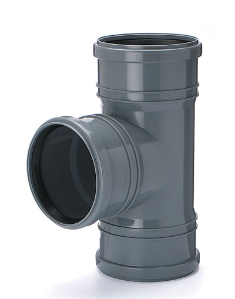
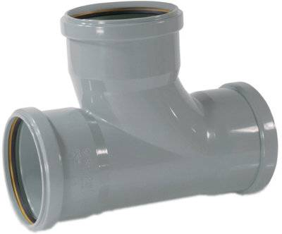

Вопрос: бывают ли канализационные тройники с тремя муфтами?
Ответ: да, бывают. Некоторые производители называют их "тройниками с тремя раструбами" или "тройник трехраструбный". Выглядят они вот так:


Модель тройника: U1T3K, ø 110 / 110 / 110 / 90°
Еще одна модель: Uponor HTP 1051243 Тройник трехраструбный 88.5° (d110 мм 143 мм)